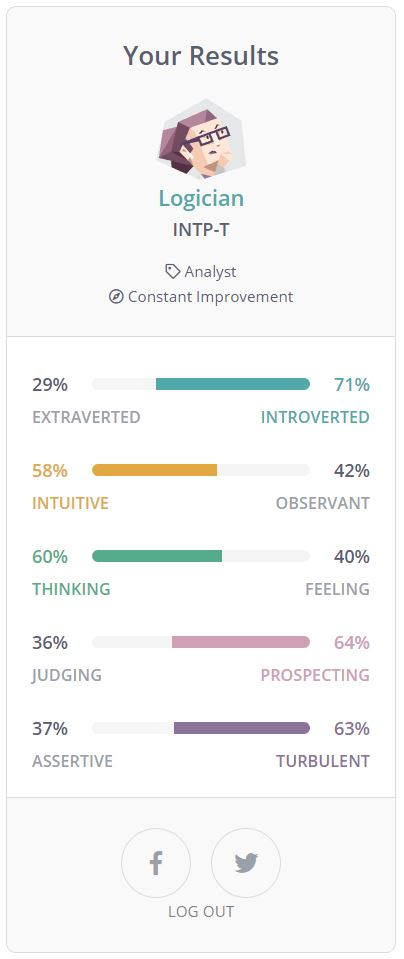

Personality Profiles

Foreword that the Myer-Briggs Personality tests should not be used as an indicater of a person's personality but merely as a tool to
see which traits a person may have.
Below are the summaries of the different personality of our group members.
Our team is quite varied as shown by out personality tests (using Myer Briggs Style personality tests)
Emma:
Myer-Briggs test: INTP-T. Logician. Introverted, mostly rational, can be a bit day-dreamy.
Learning style: Visual learner. Prefer to visually see things as they happen or be able to visualise the process.
Word association: ISTP Analyzer/crafter. Open to new information, enjoy exploring new things (sometimes).
Some compatible information, general indication that more introverted, likes to use visuals and likes trying new things or new strategies for problems.
Emma is INTP which falls towards a more introverted personality type this personality type is quite rare and widely known for their creativeness and inventiveness the strengths of this personality type is that they’re abstract thinkers and great at coming up with original solutions.
Jordan:
Jordan is ENFP which falls into an Extroverted type personality another rare personality type. The strengths of this personality type is that they’re enthusiastic and energetic as well as excellent communicators which is good in a group dynamic, they’re also curious when it comes to new ideas and aren’t afraid to give it a try
Joe:
Myer-Briggs test: ISFJ-T. Introverted, Observant, Feeling, Judging, Turbulent.
Learning style: Visual learner.
123tset: ‘CISREA’, preferring conventional and investigative jobs.
“Those tests’ results offer an interesting view but may not match with my views of self. I can learn more about me through tests especially when I know the strengths, weaknesses of my personality. The results will advise me to make a better decision of my future career paths.” Joe is ISFJ which is an introverted based personality the key strengths of this personality type in a group dynamic is that they’re supportive, reliable, hard-Working and enthusiastic an ISFJ type is highly valued in a group
An:
Myer-Briggs test: ENFJ- extraversion, intuition, feeling and judgement.
These results mean that I prioritise personal growth towards my friends and colleagues.
Learning style test - Visual Learner
These results mean that I can gain knowledge through visuals rather than verbal or written communication. These results can help me in a group project as I can spot any errors made by my group members and correct the errors if necessary.
Big Five personality test - an empathic idealist, a practical caretaker, an analytical thinker and a logical mechanic.
An is ENFJ another extroverted personality type, this personality type is known for being team players they’re tolerant and reliable and normally lean towards a leadership position they’re natural leaders and thrive in a group environment
Umer:
Myer-Briggs test: INTJ-T Introverted, Intuitive, Thinking, Judging, Turbulent
Type: Turbulent Architect
Role: Analyst
Strategy: Constant Improvement
Learning Style test: Auditory learner - The test results mean that I learn by listening and speaking.
Big Five personality test: openness, conscientiousness, extraversion, agreeableness and neuroticism. I have the right attitude to meet the people.
Umer is INTJ an introverted based personality and is one of the rarest personality types with only about 0.8% of the population being this type they’re quick thinkers and self-confident in a group environment they’re hard-working and determined and are a jack of all trades - highly useful in a group dynamic
As you can see, we’re all very different personality types with a good mix of introverts and extroverts and a great mix of strengths that can be used in this group. We could all work great together using our mix of creativity problem-solving skills and determination to solve any problems we may face - though we have to be mindful because with all these different traits it can cause conflict but if we work together and be mindful and consider everyone’s ideas the group could thrive